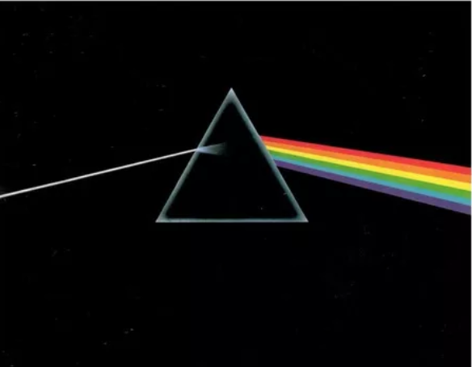
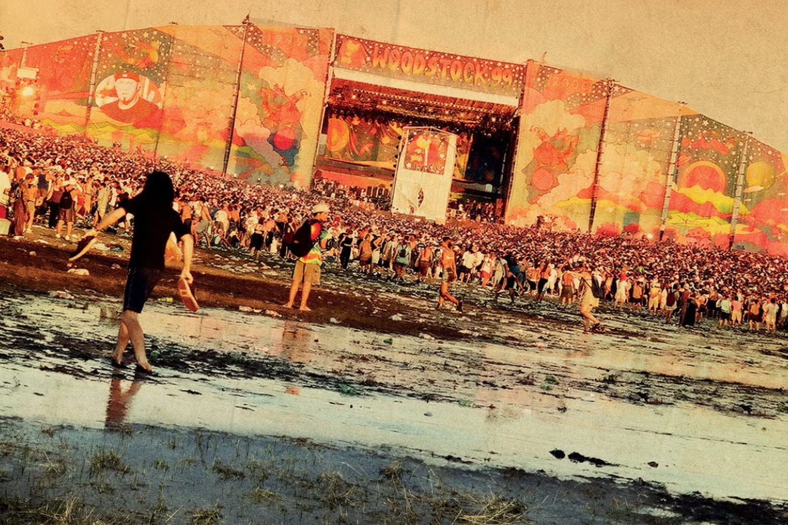

Reseñas

The dark side of the moon
Dark Side of the Moon" es el icónico álbum de Pink Floyd, lanzado en 1973. Explora temas profundos como el tiempo, la locura y la vida misma, con una atmósfera sonora experimental y letras introspectivas.

Woodstok '99
Woodstock '99 fue un festival de música celebrado en julio de 1999 en Nueva York. Se caracterizó por problemas como altos precios, escasez de agua y condiciones insalubres. Hubo disturbios y actos de violencia, lo que marcó un contraste con el espíritu pacífico del Woodstock original de 1969.